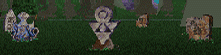

GRAVEYARDS
GRAVEYARDS[HOME]
GRAVEYARDSGraveyards listed below are named by the nearest Town or Temple, except Dimwood Graves
(see MAP WEB for exact location).All Graves in the Northlands (Chapter 4) are empty.
SEE:
NORTHLAND GRAVESA Shovel is needed to dig up a Grave.
No time will pass if an Item is found, or a Shade disturbed.
If you dig all the way down to a Coffin or Corpse, an HOUR of Game Time will pass.
|  | TYR-SOG GRAVEYARD | |
| WEEDWALKERS [1] | Pul Dudding | No one knew when he came or when he went. |
| POISONED RATIONS [7] | Aglus Soggin | Another helping put him six feet under. |
| SHADE | Baby Irisa | A week she cried before she slept. |
| Corpse | Iruna | In the wilds was the Hadati woman. |
| Corpse | Ceilia deBuellen | Water took her to the deeps. |
| Corpse | David Bouli | Buried without a word. |
| LAMUT GRAVEYARD | ||
| SPYNOTE #04 | Jad Peebles | He engaged in his last undertaking. |
| FLAMING QUARRELS [10] | Klamontala Pechta | Touched by flames for honor's sake. |
| GOLD SOVEREIGNS [13] | Goldie Crowe | In death her face was that of a sovereign. |
| RESTORATIVES [4] | Rosel LaMutian | Her face was sweet and her hands could heal. |
| Corpse | Michel Ambazac | As you are, I once was. As I am, you will be. |
| Corpse | Pargus Attacarper | His fish didn't get away. |
| Corpse | Stranger | His chest was opened by a moredhel. |
| Corpse | A. R. Cramond | He told a lie and paid the price. |
| Corpse | Hyden Miller | A bone did him in. |
| Corpse | Mirriam Haselcalph | To the Drawer of Nets she took her key. |
| Corpse | Victor Marmallion | A cad. A cur. We loved him still. |
| EGGLEY GRAVEYARD | ||
| SHOVEL [25] | Parker Biddle | Dug his own grave. |
| PICKLOCKS [3] | Dersham Pruitt | His end justified the means. |
| BROADSWORDS [65] [100] | Stell Larim | She died in her lover's arms. |
| SHADE | Melba Kane | Outlived her kids. |
| Corpse | Barlow Flinn | May the Death Goddess treat him well. |
| Corpse | Unknown | A lovely lass. Found beside the road. |
| Corpse | Algon Trent | Wanted to be a prince. |
| Corpse | Bursha Amberton | Lost his wife, then took his life. |
| Corpse | Olive Amberton | Rest easy my darling. |
| Corpse | WARNING! The fiend beneath this stone is trapped by dirt, not by death. Stay away! | |
| QUESTOR'S VIEW GRAVEYARD | ||
| HEAVY BOWSTRING [1] | Todor Milbo | The townsfolk strung him up. |
| DALATAIL MILK [3] | Baylor Dalatail | Drank his milk every day. |
| SHADE | Timothy Weyant | Suffers no longer. |
| Corpse | Thomas Brooke | Fought with his neighbors. Lost. |
| Corpse | Alana Roberts | Sleep, sweet. Sweet sleep. |
| Corpse | Hatfield Tucker | Drank his own poison. |
| Corpse | Larston Dewey | I TOLD you I was sick! |
| Corpse | Anthony Rankin | Fell off his high horse. |
| Corpse | Ryan Wingard | Lost at dice. Lost his temper. Lost his life. |
| Corpse | WARNING! The fiend beneath this stone is trapped by dirt, not by death. Stay away! | |
| NIA'S VILLAGE GRAVEYARD | ||
| NAPHTHA [2] | Kevyn Pathan | Got too close to his work. |
| QUEST! | Jared Lycrow | Owned a shop and a tavern. Never wanted for more. |
| Corpse | Dulcima Daggens | Mother's womb to earthen tomb. |
| Corpse | Vaness Marlin | Couldn't rest in life... |
| Corpse | Leighton Dink | No longer can he hate his name. |
| MALAC'S CROSS GRAVEYARD | ||
| SHADE | Ulandra Maggard | Lost her mind before her life. |
| Corpse | Jalice Riggens | Mother. Wife. Lover. |
| Corpse | Lewece Champetier | Loved her Kings. |
| Corpse | Warren Gunther | Greatfully Dead. |
| Corpse | J. R. Halbhuber | Death by association. |
| LIMS-KRAGMA GRAVEYARD | ||
| GOLD SOVEREIGNS [5] | Randall Deigh | His death has enriched our lives. |
| ROPE [45] | Daniel Velecamp | Pore pore Danny. Had a bad spell. |
| Corpse | Wayland M. Wasserman | Hated everything. |
| Corpse | Keisha | The traveler's friend. |
| Corpse | Mason Moorcamp | Had a nasty Alement. |
| PRANK'S STONE GRAVEYARD | ||
| VIRTUE KEY [1] | Jason Verchew | He sung off key. |
| FLAMING QUARRELS [13] | Corey Perlance | Lost his life fighting a fire. |
| SHADE | Damon Boyersmith | He didn't want to go. |
| SHADE | Lincoln Albervant | He lies here too. |
| Corpse | Leighton Dink | No longer can he hate his name. |
| Corpse | Nat Delars | May the Goddess of Death be gentle. |
| Corpse | Marty Hippler | Beloved by all. |
| Corpse | Jenny Gray | Oh, to feel her sweet kiss. |
| Corpse | Sher Perlance | She loved to dance. |
| Corpse | Kyle Bruning | Always our loving son. |
| HIGHCASTLE GRAVEYARD | ||
| RUBY [63] | Rue Beal | Died in her favorite red dress. |
| SHADE | Luke Midkiff | Soon the Gods will know his name. |
| Corpse | Constance Frohmeyer | Had twelve kids. The thirteenth killed her. |
| Corpse | Manek Ekeland | His company was killed in the Northlands. |
| Corpse | Virginia Ekeland | Her husband never came home. |
| Corpse | Bradford Ekeland | He made his parents proud. |
| Corpse | Lloyd Brenneman | His head was in the clouds. |
| DIMWOOD GRAVES | ||
| GOLD SOVEREIGNS [25] | Christopher Madine | He was like a brother to us. |
| Corpse | James Delittle | Swallowed his pride and it killed him. |
| LEWTON'S CONCENTRATE [2] | Barlew Tunns | He forgot to concentrate. |
| REDWEED BREW [3] | Red du Wied | A stronger man there never was. |
| SHADE | Paulson Berthold | Came to the Dimwood looking for peace. |
| Corpse | Julie DeChamp | Her smile could warm the coldest day. |
| FADAMOR'S FORMULA [3] | Orson du Bas Fadamor | Killed the giant that dealt his fatal blow. |
| Corpse | Mitchell Janns | Disappeared into the woods. Never came back. |
| Corpse | Miller Dubbs | At last he has joined his beloved wife. |
| Corpse | Rose Dubbs | No wife shall be so missed. |
| RUBY [78] | Ashlyn Mecchus | All who knew her loved her. |
| SHADE | Unknown | May his soul find the peace he could not. |
| Corpse | Dell Briddle | She followed her love wherever he went. |
| WEEDWALKERS [1] | Forrest Walker | Deadicated. |
| DRAGONSTONE [6] | Marlen Shephard | Threw a stone at a dragon. |
| Corpse | Raoul du Lezanne | Skins were his trade. |
| Corpse | Jarrett Jester | Stood beneath the wrong tree. |
| ANCIENT VALHERU RUINS | ||
| Corpse | Latham McCann | Loved the mines. Never wanted to leave. |
| NOTES |
Leighton Dink is buried twice, both in Questor's View and Prank's Stone!An Item buried in a Grave is usually suggested by the Headstone with a pun, anagram, or other type of word-play. Some are obvious, others less so.A few "non-existent" graves can be found in the game code:
Neblon Hunt. "Our loving father."
A Mother. "Down to night she went, a day before her daughter."
Ben Snared. "Many were captured by his wit."
Jake Careoaq. "His drinking days are done."
Timothy Boyer. "First in everything."
Penny May. "Or maybe she won't."
Quite a few actually conceal the Item's name, often phonetically:
Gold Sovereigns - Goldie Crowe. "In death her face was that of a sovereign."
Dalatail Milk - Baylor Dalatail. "Drank his milk every day."
Virtue Key - Jason Verchew. "He sung off key."
Ruby - Rue Beal. "Died in her favorite red dress."
Lewton's Concentrate - Barlew Tunns. "He forgot to concentrate."
Redweed Brew - Red du Wied. "A stronger man there never was."
Fadamor's Formula - Orson du Bas Fadamor. "Killed the giant that dealt his fatal blow."
Dragonstone - Marlen Shephard. "Threw a stone at a dragon."
Bowstring - Todor Milbo. "The townsfolk strung him up."Others rely on hints (both obvious and obscure):
Flaming Quarrels - Klamontala Pechta. "Touched by flames for honor's sake."
Flaming Quarrels - Corey Perlance. "Lost his life fighting a fire."
Gold Sovereigns - Randall Deigh. "His death has enriched our lives."
Ruby - Ashlyn Mecchus. "All who knew her loved her".
Restoratives - Rosel LaMutian. "Her face was sweet and her hands could heal."
Weedwalkers - Pul Dudding. "No one knew when he came or when he went."
Weedwalkers - Forrest Walker. "Deadicated."
Poisoned Rations - Aglus Soggin. "Another helping put him six feet under."
Shovel - Parker Biddle. "Dug his own grave."
Broadswords - Stell Larim. "She died in her lover's arms."Two seem to be (not very successful) anagrams:
Naphtha- Kevyn Pathan. "Got too close to his work." [Pathan = Napht(h)a]
Rope - Daniel Velecamp. "Pore pore Danny. Had a bad spell." [Pore = Rope]The final three below make no sense to me. Perhaps they were not meant to.
Gold Sovereigns - Christopher Madine. "He was like a brother to us."
Picklocks - Dersham Pruitt. "His end justified the means."
Spynote - Jad Peebles. "He engaged in his last undertaking."SHADES: As far as I can see, there is no obvious hint here, neither in the name nor the epitaph. There seems to be a general indication of serious suffering in life (a terribly ill child, a mother who lost all her children), but most of the hints are less than clear.
Baby Irisa. "A week she cried before she slept."
Melba Kane. "Outlived her kids."
Timothy Weyant. "Suffers no longer."
Ulandra Maggard. "Lost her mind before her life."
Lincoln Albervant. "He lies here too."
Damon Boyersmith. "He didn't want to go."
Luke Midkiff. "Soon the Gods will know his name."
Paulson Berthold. "Came to the Dimwood looking for peace."
Unknown. "May his soul find the peace he could not."
[TOP OF PAGE]